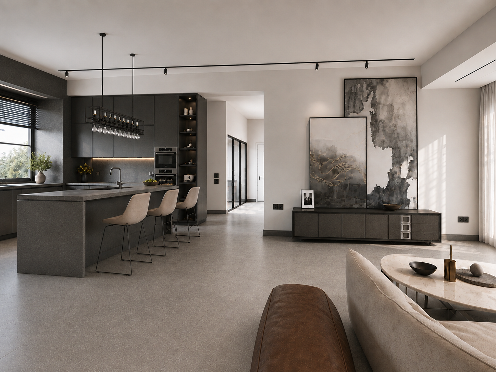
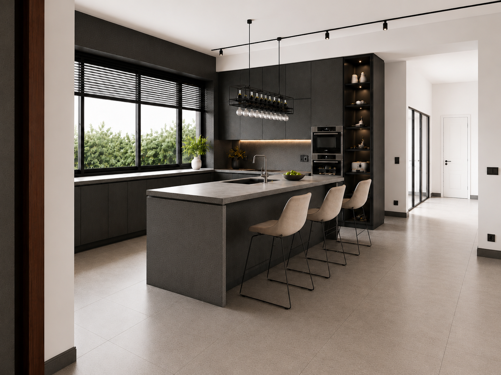
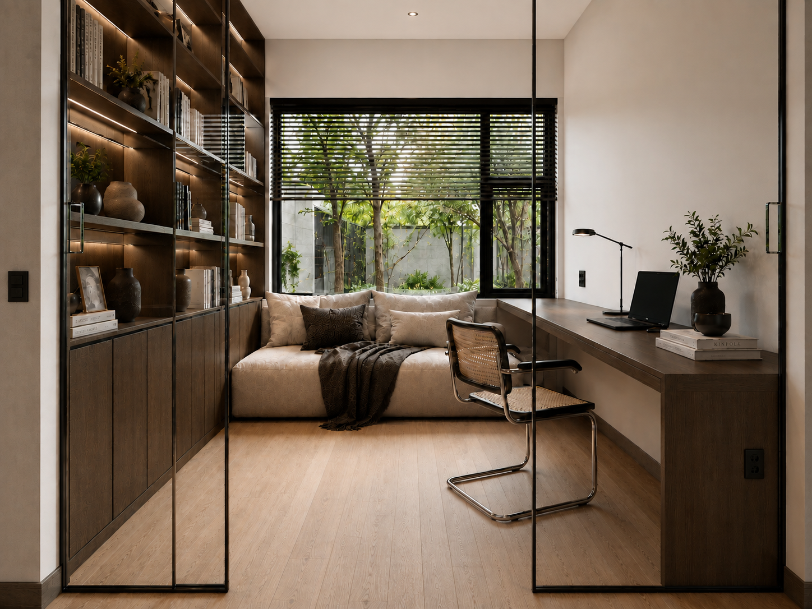
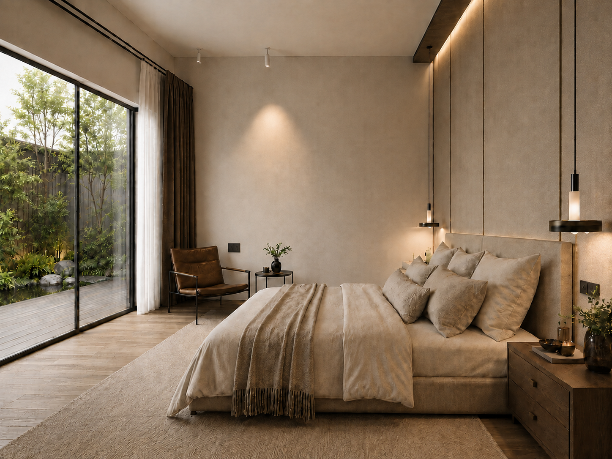
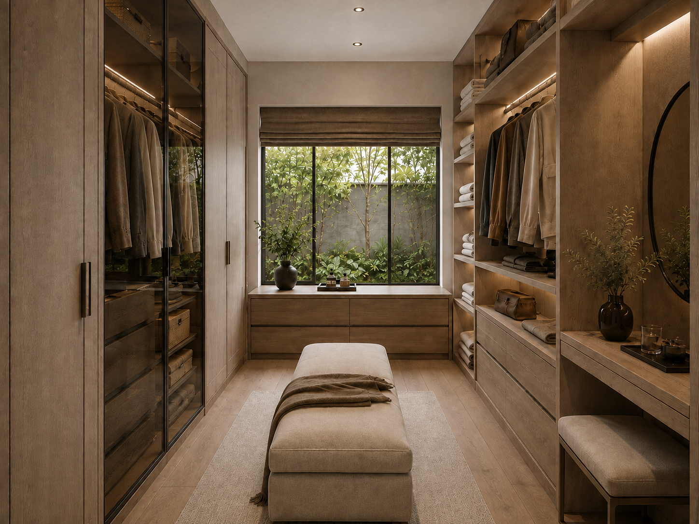

GREY
CONTINUUM
灰域连续体
Dải không gian xám
深灰色厨房体量成为公共空间的视觉锚点，书房、卧室与衣帽间则沿庭院景观展开。玻璃、木饰面与低反射材质串联开放与私密区域，让自然光和绿意进入日常生活。
A dark kitchen volume anchors the shared living space, while the study, bedroom and dressing room open toward the garden. Glass, timber and low-reflective surfaces connect public and private rooms through daylight and greenery.
Khối bếp màu xám đậm tạo điểm neo cho không gian sinh hoạt chung; phòng làm việc, phòng ngủ và phòng thay đồ hướng ra khu vườn. Kính, gỗ và bề mặt ít phản xạ liên kết các khu vực bằng ánh sáng tự nhiên và cây xanh.
客厅与厨房保持连续，深色柜体、岛台和艺术陈列共同建立公共区域的秩序。

DARK VOLUME
IN DAYLIGHT
厨房以深灰色整体柜体和中岛形成紧凑的功能核心。扩大后的横向窗景将庭院光线带入操作区，开放格与局部灯带让深色体量保持轻盈。
The kitchen forms a compact functional core through dark cabinetry and a generous island. A widened window brings garden light deep into the working zone, while open shelving and integrated light soften the dark volume.
A ROOM
WITHIN GREEN
书房位于玻璃折叠门之后，保持独立的同时继续分享庭院景观。书柜、书桌与临窗软榻围合出阅读、工作与短暂停留的复合空间。


QUIET
RETREAT
卧室转向更柔和的灰白与木色。哑光木地板、织物床品和克制的暖光共同降低空间刺激，窄边推拉门将卧室直接连接至庭院长廊。
The bedroom shifts toward softer grey, warm timber and tactile textiles. Matte surfaces and restrained lighting create a quiet retreat directly connected to the garden deck.
LIGHT
THROUGH
STORAGE
衣帽间沿两侧布置收纳与梳妆界面，错铺木地板由入口轴向庭院窗展开。窄边窗将园林景色引入空间，使日常收纳也保持自然光与层次。

A home becomes calm
when light, material and use
share the same order.
遵循同一种秩序，
住宅才真正安静下来。